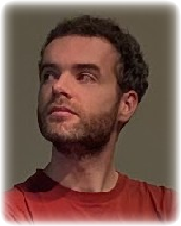

Verifier-state pruning in BPF
The BPF verifier works, on a theoretical level, by considering every possible path that a BPF program could take. As a practical matter, however, it needs to do that in a reasonable amount of time. At the 2025 Linux Plumbers Conference, Mahé Tardy and Paul Chaignon gave a detailed explanation (slides; video) of the main mechanism that it uses to accomplish that: state pruning. They focused on two optimizations that help reduce the number of paths the verifier needs to check, and discussed some of the complications the optimizations introduced to the verifier's code.
Tardy began by giving an example of the simplest kind of branching control flow: a program with a single if statement in it. This program has two potential execution paths. Adding another (non-nested) if statement makes it four, then eight, and by the time one reaches a realistic program, the number of possible paths is completely intractable. Sometimes, however, a conditional branch doesn't actually result in any changes that the verifier cares about:
int index = 3;
if (condition) {
// Some code that doesn't change the value of index
...
}
// The validity of index doesn't depend on whether the branch was taken
int foo = array[index];
The core question that state pruning asks, Tardy said, is: "Can we skip some
of the other paths?
" To determine that, the verifier uses special "pruning points" in
a program's execution where it knows that it might be able to cut out redundant
paths. Pruning points are inserted at the sources and targets of conditional
jumps, places where unconditional jumps rejoin a different series of
instructions, and function calls. In the above example, pruning points are added
at the conditional jump corresponding to the if statement, and at the end of the
if statement.
![[Mahé Tardy]](https://static.lwn.net/images/2025/mahé-tardy-lpc.png "Mahé Tardy")
When the verifier reaches a pruning point during verification, it saves a copy of its current state for later reference. If the pruning point is a conditional branch, it also pushes that copy of the state to a stack to come back and explore later. The state includes everything that affects the execution of the BPF program, including the current instruction pointer, so no information is lost when backtracking. When the verifier reaches a subsequent pruning point, it compares its current state against the saved states; if the current state is equivalent to a previously observed state, the verifier knows that it can stop exploring the current state, since it won't find anything new.
That explanation puts a lot of weight on the word "equivalent", however. In theory, Tardy said, two states are equivalent if the current state has a subset of the possible values of the saved state (and, in particular, if they both occur at the same position in the program). So two states that are identical, except that the saved state has an unknown value in register r1 and the current state has the specific value 4 in r1, are considered equivalent.
When state pruning was introduced in kernel version 3.18, the check was that simple. But, since then, the implementation of state pruning has gained an increasing number of complexities to allow the verifier to efficiently prune more states. For example, recent kernels use a least-recently-used cache for seen states, to reduce the memory footprint of state pruning.
In practice, Chaignon said, real programs rarely feature states that are
entirely included in one another. But the verifier can find more overlapping
states if it only compares parts of the state that turn out to actually matter
for verification. "Also, the less we compare, the more efficient state
pruning is.
"

To illustrate this principle, Chaignon went over the two most important state-pruning optimizations in the verifier today. The first is to consider only "live" registers when comparing states. A register is live if its value is used in the future by the program, and dead if it is not used again before it is overwritten. If two states are the same other than the contents of a dead register, the verifier can infer that exploring further wouldn't result in any different program behaviors, since the dead register is by definition not used. Therefore, the state can safely be pruned.
That does require the verifier to know when registers are live or dead; it
computes that information in a pre-pass over the program before the start of the
main verification logic. Since which registers a program uses can be seen purely
by inspecting the individual instructions, that pass is relatively simple. Stack
slots, however, are not so simple. The same concept of liveness can be applied
to stack slots, but because of the potential for pointer arithmetic, the
verifier can't actually tell which stack slots are used at which points in the
program without simulating it. So the verifier's equivalent logic for
stack-slot-based pruning is interwoven with the main verification pass, which
"makes the whole implementation quite different and more complicated
."
The second optimization that Chaignon covered was a bit more specialized. It was born from the observation that the verifier often doesn't care about the exact value of a register. If a register is used as an index into an array, it needs to care about whether the value falls within bounds. But if a value is just stored into a BPF map for later use, the verifier doesn't care what the exact value is.
So if two states are equivalent except for the value in a live register or stack slot, but that value is never used in a way that requires the verifier to care about it, the state can be safely pruned. To track this, every time a value is used for verification (such as being used as an array index), it is marked as "precise". That mark is propagated backward to previous states and all of the other registers and stack slots that contributed to that value. When two states are being compared for equivalence, the verifier only checks values that have been marked as precise.
The overall implementation of state pruning in the verifier has changed a lot over time, Chaignon said. There are more details than would fit in the presentation, so he and Tardy intend to publish a series of blog posts about the other things they learned in the course of preparing the talk. At the time of writing, those posts are not yet up, but they will presumably appear on either Tardy's blog or Chaignon's blog.
One member of the audience asked whether the verifier ever unions two states together. That would lose precision, but be better than the verifier failing to prove the program safe in a reasonable amount of time, they said. Chaignon answered that the Linux kernel verifier doesn't do that, but the Windows implementation of eBPF does. That kind of operation is called widening, and doesn't always help. Widening replaces a specific state with a more general state, in the hopes of causing more state pruning. It's hard to know exactly when widening will actually help, and when it will result in the verifier rejecting programs that are actually safe. Another member of the audience jumped in to clarify that the Linux implementation does actually do widening in one specific place: on the second iteration of a loop, if a value wasn't marked as precise, it gets widened (i.e. the verifier assumes that register or stack slot could take on any value). That helps loops to reach a fixed point, where future iterations of the loop can be pruned since they wouldn't add any new information, which is important for fast verification in practice.
[ Thanks to the Linux Foundation, LWN's travel sponsor, for supporting my travel to the Linux Plumbers Conference. ]
| Index entries for this article | |
|---|---|
| Kernel | BPF/Verifier |
| Conference | Linux Plumbers Conference/2025 |
Posted Jan 20, 2026 16:27 UTC (Tue)
by mtardy (subscriber, #169901)
[Link]
Regarding that paragraph: We published the two first blog posts for this series:
Two first blog posts following LPC
There are more details than would fit in the presentation, so he [Chaignon] and Tardy intend to publish a series of blog posts about the other things they learned in the course of preparing the talk. At the time of writing, those posts are not yet up, but they will presumably appear on either Tardy's blog or Chaignon's blog.